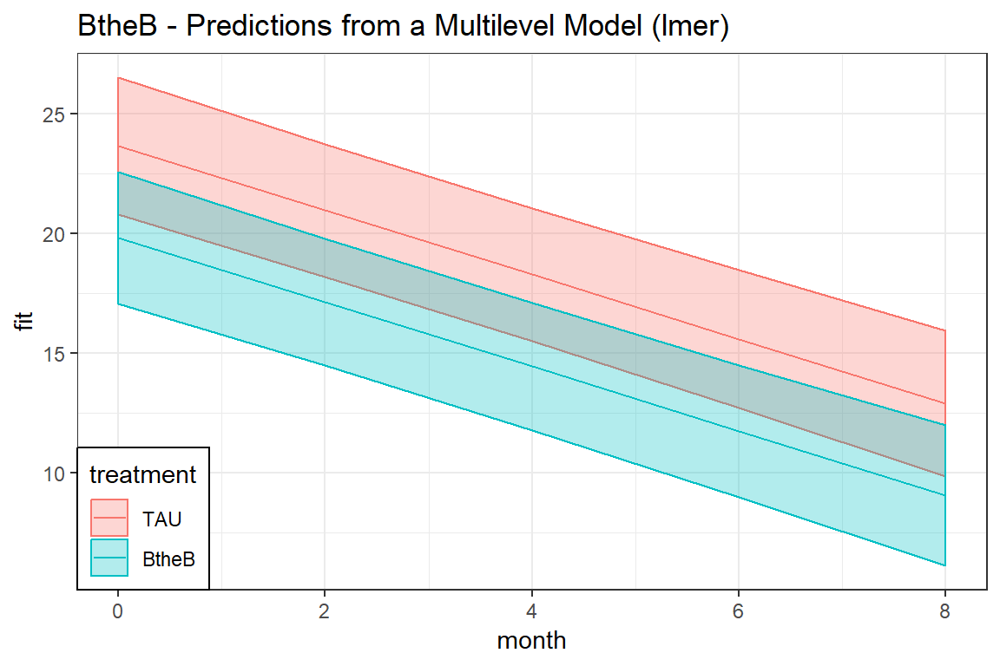
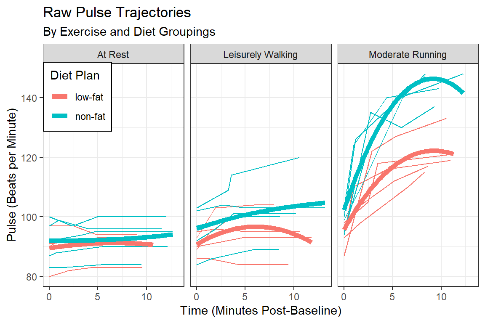

12 GEE, Continuous Outcome: Beat the Blues
library(tidyverse) # all things tidy
library(pander) # nice looking genderal tabulations
library(furniture) # nice table1() descriptives
library(texreg) # Convert Regression Output to LaTeX or HTML Tables
library(psych) # contains some useful functions, like headTail
library(lme4) # Linear, generalized linear, & nonlinear mixed models
library(corrplot) # Vizualize correlation matrix
library(gee) # Genderalized Estimation Equation Solver
library(geepack) # Genderalized Estimation Equation Package
library(MuMIn) # Multi-Model Inference (caluclate QIC)
library(HSAUR) # package with the dataset12.1 Prepare and get to know the dataset
12.1.1 Read in the data
This data set is in the HSAUR package. It is from a clinical trial of an interactive multimedia program called ‘Beat the Blues’. The variables are as follows:
drugdid the patient take anti-depressant drugs (No or Yes)
lengththe length of the current episode of depression, a factor with levels:- “<6m” less than six months
- “>6m” more than six months
- “<6m” less than six months
treatmenttreatment group, a factor with levels:- “TAU” treatment as usual
- “BtheB” Beat the Blues
- “TAU” treatment as usual
bdi.preBeck Depression Inventory II, before treatment
bdi.2mBeck Depression Inventory II, after 2 months
bdi.4mBeck Depression Inventory II, after 4 months
bdi.6mBeck Depression Inventory II, after 6 months
bdi.8mBeck Depression Inventory II, after 8 months
data(BtheB, package = "HSAUR")
BtheB %>%
psych::headTail() drug length treatment bdi.pre bdi.2m bdi.4m bdi.6m bdi.8m
1 No >6m TAU 29 2 2 <NA> <NA>
2 Yes >6m BtheB 32 16 24 17 20
3 Yes <6m TAU 25 20 <NA> <NA> <NA>
4 No >6m BtheB 21 17 16 10 9
... <NA> <NA> <NA> ... ... ... ... ...
97 Yes <6m TAU 28 <NA> <NA> <NA> <NA>
98 No >6m BtheB 11 22 9 11 11
99 No <6m TAU 13 5 5 0 6
100 Yes <6m TAU 43 <NA> <NA> <NA> <NA>12.1.2 Tidy up the dataset
btb_wide <- BtheB %>%
dplyr::mutate(id = row_number()) %>% # create a new variable to ID participants
dplyr::select(id, treatment, # specify that ID variable is first
bdi.pre, bdi.2m, bdi.4m, bdi.6m, bdi.8m)btb_wide %>%
furniture::table1(bdi.pre, bdi.2m, bdi.4m, bdi.6m, bdi.8m,
splitby = ~ treatment,
test = TRUE,
output = "html")| TAU | BtheB | P-Value | |
|---|---|---|---|
| n = 25 | n = 27 | ||
| bdi pre | 0.427 | ||
| 24.1 (8.1) | 22.0 (10.9) | ||
| bdi 2m | 0.001 | ||
| 20.1 (11.5) | 10.9 (6.5) | ||
| bdi 4m | 0.01 | ||
| 17.8 (12.2) | 10.3 (6.9) | ||
| bdi 6m | 0.038 | ||
| 15.9 (12.8) | 9.5 (8.1) | ||
| bdi 8m | 0.074 | ||
| 13.6 (11.5) | 8.9 (6.1) |
12.1.3 Restructure to long format
btb_long <- btb_wide %>%
tidyr::gather(key = month,
value = bdi,
starts_with("bdi")) %>%
dplyr::mutate(month = case_when(month == "bdi.pre" ~ 0,
month == "bdi.2m" ~ 2,
month == "bdi.4m" ~ 4,
month == "bdi.6m" ~ 6,
month == "bdi.8m" ~ 8)) %>%
dplyr::filter(complete.cases(id, bdi, treatment, month)) %>%
dplyr::arrange(id, month) %>%
dplyr::select(id, treatment, month, bdi)btb_long %>%
psych::headTail(top = 10, bottom = 10) id treatment month bdi
1 1 TAU 0 29
2 1 TAU 2 2
3 1 TAU 4 2
4 2 BtheB 0 32
5 2 BtheB 2 16
6 2 BtheB 4 24
7 2 BtheB 6 17
8 2 BtheB 8 20
9 3 TAU 0 25
10 3 TAU 2 20
... ... <NA> ... ...
371 98 BtheB 2 22
372 98 BtheB 4 9
373 98 BtheB 6 11
374 98 BtheB 8 11
375 99 TAU 0 13
376 99 TAU 2 5
377 99 TAU 4 5
378 99 TAU 6 0
379 99 TAU 8 6
380 100 TAU 0 4312.1.4 Visualize: Person-profile Plots
Create spaghetti plots of the raw, observed data
btb_long %>%
ggplot(aes(x = month,
y = bdi)) +
geom_point() +
geom_line(aes(group = id),
size = 1,
alpha = 0.3) +
geom_smooth(method = "lm") +
facet_grid(.~ treatment) +
theme_bw() +
labs(title = "BtheB - Observed Data Across Time with LM Smoother")
btb_long %>%
ggplot(aes(x = month,
y = bdi,
color = treatment,
fill = treatment)) +
geom_smooth(method = "lm") +
theme_bw() +
labs(title = "BtheB - Observed Data: Linear Smoothers Across Time")
12.1.5 Calculate the Observed Correlation Structure
bdi_corr <- btb_wide %>%
dplyr::select(starts_with("bdi")) %>%
stats::cor(use="pairwise.complete.obs")
bdi_corr bdi.pre bdi.2m bdi.4m bdi.6m bdi.8m
bdi.pre 1.0000000 0.6142207 0.5691248 0.5077286 0.3835090
bdi.2m 0.6142207 1.0000000 0.7903346 0.7849188 0.7038158
bdi.4m 0.5691248 0.7903346 1.0000000 0.8166591 0.7220149
bdi.6m 0.5077286 0.7849188 0.8166591 1.0000000 0.8107773
bdi.8m 0.3835090 0.7038158 0.7220149 0.8107773 1.000000012.1.6 Plot the correlation matrix to get a better feel for the pattern
corrplot::corrplot.mixed(bdi_corr)
12.2 Multiple Regression (OLS)
This ignores any correlation between repeated measures on the same individual and treats all observations as independent.
12.2.1 Fit the model and view the output in a table
btb_lm <- stats::lm(bdi ~ treatment + month,
data = btb_long)12.2.2 Parameter Estimates
# Knit to Website: texreg::htmlreg()
# Knit to PDF: texreg::texreg()
# View on Screen: texreg::screenreg()
texreg::htmlreg(btb_lm,
custom.model.names = "OLS")| OLS | ||
|---|---|---|
| (Intercept) | 24.06*** | |
| (1.03) | ||
| treatmentBtheB | -4.47*** | |
| (1.10) | ||
| month | -1.51*** | |
| (0.20) | ||
| R2 | 0.16 | |
| Adj. R2 | 0.16 | |
| Num. obs. | 380 | |
| RMSE | 10.71 | |
| p < 0.001, p < 0.01, p < 0.05 | ||
12.2.3 Plot the model predictions
effects::Effect(focal.predictors = c("treatment", "month"),
mod = btb_lm) %>%
data.frame %>%
dplyr::mutate(treatment = fct_reorder2(treatment, month, fit)) %>%
ggplot(aes(x = month,
y = fit,
color = treatment,
fill = treatment)) +
geom_line() +
geom_ribbon(aes(ymin = lower,
ymax = upper), alpha = 0.3) +
theme_bw() +
labs(title = "BtheB - Predictions from a Linear Model (lm)") +
theme(legend.position = c(1, 1),
legend.justification = c(1.1, 1.1),
legend.background = element_rect(color = "black"))
12.3 Multilevel Models (MLM)
12.3.1 Fit the model and compare to the prior model
btb_lmer_RI <- lme4::lmer(bdi ~ treatment + month + (1 | id),
data = btb_long,
REML = TRUE)
btb_lmer_RIAS <- lme4::lmer(bdi ~ treatment + month + (month | id),
data = btb_long,
REML = TRUE)# Knit to Website: texreg::htmlreg()
# Knit to PDF: texreg::texreg()
# View on Screen: texreg::screenreg()
texreg::htmlreg(list(btb_lm, btb_lmer_RI, btb_lmer_RIAS),
custom.model.names = c("OLS", "MLM-RI", "MLM-RIAS"))| OLS | MLM-RI | MLM-RIAS | ||
|---|---|---|---|---|
| (Intercept) | 24.06*** | 23.67*** | 23.57*** | |
| (1.03) | (1.45) | (1.44) | ||
| treatmentBtheB | -4.47*** | -3.84* | -3.67 | |
| (1.10) | (1.95) | (1.94) | ||
| month | -1.51*** | -1.35*** | -1.34*** | |
| (0.20) | (0.13) | (0.14) | ||
| R2 | 0.16 | |||
| Adj. R2 | 0.16 | |||
| Num. obs. | 380 | 380 | 380 | |
| RMSE | 10.71 | |||
| AIC | 2689.73 | 2690.00 | ||
| BIC | 2709.43 | 2717.59 | ||
| Log Likelihood | -1339.86 | -1338.00 | ||
| Num. groups: id | 100 | 100 | ||
| Var: id (Intercept) | 82.43 | 80.06 | ||
| Var: Residual | 39.14 | 35.88 | ||
| Var: id month | 0.39 | |||
| Cov: id (Intercept) month | -0.05 | |||
| p < 0.001, p < 0.01, p < 0.05 | ||||
12.3.2 Likelihood Ratio Test
anova(btb_lmer_RI,
btb_lmer_RIAS,
refit = FALSE)Data: btb_long
Models:
btb_lmer_RI: bdi ~ treatment + month + (1 | id)
btb_lmer_RIAS: bdi ~ treatment + month + (month | id)
Df AIC BIC logLik deviance Chisq Chi Df Pr(>Chisq)
btb_lmer_RI 5 2689.7 2709.4 -1339.9 2679.7
btb_lmer_RIAS 7 2690.0 2717.6 -1338.0 2676.0 3.7254 2 0.155312.3.3 Plot the model predictions
effects::Effect(c("treatment", "month"), mod = btb_lmer_RI) %>%
data.frame %>%
dplyr::mutate(treatment = fct_reorder2(treatment, month, fit)) %>%
ggplot(aes(x = month,
y = fit,
color = treatment,
fill = treatment)) +
geom_line() +
geom_ribbon(aes(ymin = lower,
ymax = upper), alpha = 0.3) +
theme_bw() +
labs(title = "BtheB - Predictions from a Multilevel Model (lmer)") +
theme(legend.justification = c(0, 0),
legend.position = c(0, 0),
legend.background = element_rect(color = "black"))
12.4 General Estimating Equations, GEE
12.4.1 Fit the models and compare to the prior model
Use the gee() function from the gee package for the results to be used in a texreg() table.
btb_gee_in <- gee::gee(bdi ~ treatment + month,
data = btb_long,
id = id,
family = gaussian,
corstr = 'independence') (Intercept) treatmentBtheB month
24.057331 -4.474597 -1.509032 btb_gee_ex <- gee::gee(bdi ~ treatment + month,
data = btb_long,
id = id,
family = gaussian,
corstr = 'exchangeable') (Intercept) treatmentBtheB month
24.057331 -4.474597 -1.509032 # The AR-1 fails if any subjects have only 1 observation
# to use this one, we would need to remove participants with only 1 BDI
# btb_gee_ar <- gee(bdi ~ treatment + month,
# data = btb_long,
# id = id,
# family = gaussian,
# corstr = 'AR-M',
# Mv = 1)
btb_gee_un <- gee::gee(bdi ~ treatment + month,
data = btb_long,
id = id,
family = gaussian,
corstr = 'unstructured') (Intercept) treatmentBtheB month
24.057331 -4.474597 -1.509032 12.4.2 Parameter Estimates
# Knit to Website: texreg::htmlreg()
# Knit to PDF: texreg::texreg()
# View on Screen: texreg::screenreg()
texreg::htmlreg(list(btb_lm,
btb_lmer_RI,
btb_gee_in,
btb_gee_ex,
btb_gee_un),
custom.model.names = c("OLS",
"MLM-RI",
"GEE-in",
"GEE-ex",
"GEE-un"))| OLS | MLM-RI | GEE-in | GEE-ex | GEE-un | ||
|---|---|---|---|---|---|---|
| (Intercept) | 24.06*** | 23.67*** | 24.06*** | 23.68*** | 24.23*** | |
| (1.03) | (1.45) | (1.46) | (1.40) | (1.37) | ||
| treatmentBtheB | -4.47*** | -3.84* | -4.47* | -3.87* | -3.65* | |
| (1.10) | (1.95) | (1.89) | (1.92) | (1.85) | ||
| month | -1.51*** | -1.35*** | -1.51*** | -1.36*** | -1.46*** | |
| (0.20) | (0.13) | (0.18) | (0.14) | (0.16) | ||
| R2 | 0.16 | |||||
| Adj. R2 | 0.16 | |||||
| Num. obs. | 380 | 380 | 380 | 380 | 380 | |
| RMSE | 10.71 | |||||
| AIC | 2689.73 | |||||
| BIC | 2709.43 | |||||
| Log Likelihood | -1339.86 | |||||
| Num. groups: id | 100 | |||||
| Var: id (Intercept) | 82.43 | |||||
| Var: Residual | 39.14 | |||||
| Dispersion | 114.61 | 115.07 | 115.42 | |||
| p < 0.001, p < 0.01, p < 0.05 | ||||||
12.4.2.1 Re-Fit Models
Use the geeglm() function from the geepack package for the results to be used in a anova() table.
btb_geeglm_in <- geeglm(bdi ~ treatment + month,
data = btb_long,
id = id,
wave = month,
family = gaussian,
corstr = 'independence')
btb_geeglm_ex <- geeglm(bdi ~ treatment + month,
data = btb_long,
id = id,
wave = month,
family = gaussian,
corstr = 'exchangeable')
btb_geeglm_ar <- geeglm(bdi ~ treatment + month,
data = btb_long,
id = id,
wave = month,
family = gaussian,
corstr = 'ar1')
btb_geeglm_un <- geeglm(bdi ~ treatment + month,
data = btb_long,
id = id,
wave = month,
family = gaussian,
corstr = 'unstructured')12.4.3 Can’t Use the Likelihood Ratio Test
The anova() function is used to compare nested models for parameters (fixed effects), not correlation structures.
anova(btb_geeglm_in, btb_geeglm_ex)Models are identicalNULLanova(btb_geeglm_in, btb_geeglm_ar)Models are identicalNULLanova(btb_geeglm_in, btb_geeglm_un)Models are identicalNULL12.4.4 Variaous QIC Measures of Fit
References:
Pan, W. 2001. Akaike’s information criterion in generalized estimating equations. Biometrics 57:120-125. https://onlinelibrary.wiley.com/doi/abs/10.1111/j.0006-341X.2001.00120.x
Burnham, K. P. and D. R. Anderson. 2002. Model selection and multimodel inference: a practical information-theoretic approach. Second edition. Springer Science and Business Media, Inc., New York. https://cds.cern.ch/record/1608735/files/9780387953649_TOC.pdf
The QIC() is one way to try to measure model fit. You can enter more than one model into a single function call.
QIC(I) based on independence model <– suggested by Pan (Biometric, March 2001), asymptotically unbiased estimator (choose the correlation stucture that produces the smallest QIC(I), p122)
MuMIn::QIC(btb_geeglm_in,
btb_geeglm_ex,
btb_geeglm_ar,
btb_geeglm_un,
typeR = FALSE) # default QIC
btb_geeglm_in 1812.345
btb_geeglm_ex 1812.243
btb_geeglm_ar 1811.327
btb_geeglm_un 1811.097QIC(R) is based on quasi-likelihood of a working correlation R model, can NOT be used to select the working correlation matrix.
MuMIn::QIC(btb_geeglm_in,
btb_geeglm_ex,
btb_geeglm_ar,
btb_geeglm_un,
typeR = TRUE) # NOT the default QIC
btb_geeglm_in 1812.345
btb_geeglm_ex 1813.763
btb_geeglm_ar 1816.482
btb_geeglm_un 1824.556QIC_U(R) approximates QIC(R), and while both are useful for variable selection, they can NOT be applied to select the working correlation matrix.
MuMIn::QICu(btb_geeglm_in,
btb_geeglm_ex,
btb_geeglm_ar,
btb_geeglm_un) QICu
btb_geeglm_in 2558.783
btb_geeglm_ex 2558.783
btb_geeglm_ar 2558.783
btb_geeglm_un 2558.783MuMIn::model.sel(btb_geeglm_in,
btb_geeglm_ex,
btb_geeglm_ar,
btb_geeglm_un,
rank = "QIC") #sorts the best to the TOP, uses QIC(I)Model selection table
(Intrc) month trtmn corstr qLik QIC delta weight
btb_geeglm_un 23.17 -1.074 + unstrc -22383.56 1811.1 0.00 0.334
btb_geeglm_ar 24.42 -1.503 + ar1 -21899.70 1811.3 0.23 0.298
btb_geeglm_ex 23.68 -1.357 + exchng -21691.28 1812.2 1.15 0.189
btb_geeglm_in 24.06 -1.509 + indpnd -21604.66 1812.3 1.25 0.179
Abbreviations:
corstr: exchng = 'exchangeable', indpnd = 'independence',
unstrc = 'unstructured'
Models ranked by QIC(x) 12.4.5 Plot the model predictions
Do not worry about confidence intervals.
expand.grid(treatment = levels(btb_long$treatment),
month = seq(from = 0, to = 8, by = 2)) %>%
mutate(fit_in = predict(btb_geeglm_in,
newdata = .,
type = "response")) %>%
mutate(fit_ex = predict(btb_geeglm_ex,
newdata = .,
type = "response")) %>%
mutate(fit_ar = predict(btb_geeglm_ar,
newdata = .,
type = "response")) %>%
mutate(fit_un = predict(btb_geeglm_un,
newdata = .,
type = "response")) %>%
gather(key = variable,
value = fit,
starts_with("fit")) %>%
separate(col = variable,
into = c("junk", "covR")) %>%
select(-junk) %>%
mutate(covR = factor(covR,
levels = c("un", "ar", "ex", "in"),
labels = c("Unstructured",
"Auto-Regressive",
"Compound Symetry",
"Independence"))) %>%
ggplot(aes(x = month,
y = fit,
linetype = treatment)) +
geom_line(alpha = 0.6) +
theme_bw() +
labs(title = "BtheB - Predictions from four GEE models (geeglm)",
linetype = "Treatment",
color = "Corelation\nStructure",
size = "Corelation\nStructure") +
scale_linetype_manual(values = c("solid", "longdash")) +
scale_size_manual(values = c(2, 1, 1, 1)) +
scale_color_manual(values = c("red",
"dodgerblue",
"blue",
"darkgreen")) +
theme(legend.key.width = unit(1, "cm")) +
facet_wrap(~ covR)